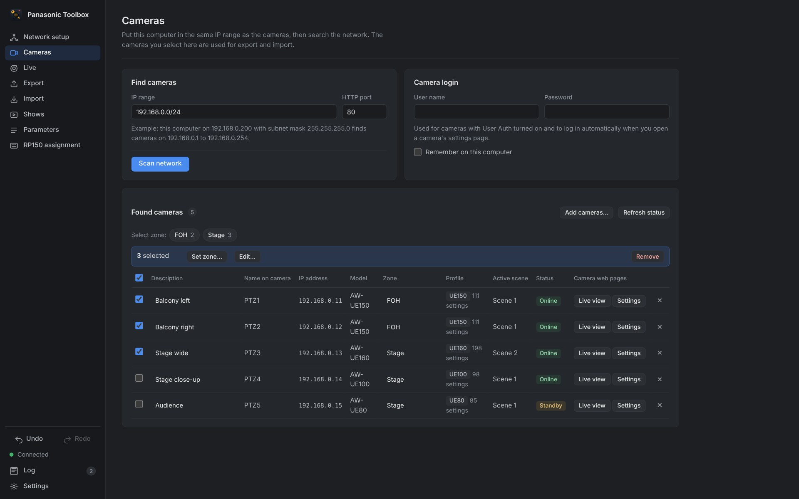

The all-in-one toolbox for Panasonic PTZ cameras and remotes
Everything you do around Panasonic PTZ cameras and remotes, in one app on your Mac or PC.
Free for macOS 11 or later and Windows 10/11.

Everything in one app
No more switching between Easy IP Setup, web pages, the controller menu and a text file of commands.
Network setup
Find every Panasonic camera on the network and set its name and IP address, like Easy IP Setup.
- Works across IP ranges
- Changes many cameras in one go
Cameras
Your list of cameras, with your own descriptions and zones.
- Status and live scene at a glance
- Zones to work on groups of cameras together
- Camera web pages in one click, already logged in
Live
Watch a camera and control it from your computer.
- Live picture with control buttons
- Presets and scene files
- Keyboard control
Export
Save a camera's settings to a file, from any scene.
- Scene files with all shading settings
- Operator files with an operator's own preferences
- Many cameras at once
Import
Put saved settings back on any camera and scene.
- See the differences first
- Automatic backup and check afterwards
- Undo and redo
Shows
Put a complete setup on all cameras with one click.
- Made from the cameras or from saved files
- Edit a show at any time
Parameters
Look up every camera command and use it in other software.
- A ready-made link for every command
- Scripts that run on many cameras at once
- What is in a scene file and an operator file, per model
RP150 assignment
Assign cameras to an AW-RP150 without its menus. Experimental.
- Fills the CAM buttons from your camera list
- Changes IP addresses in bulk
Settings
Keep productions apart and take your setup to another computer.
- Projects, each with its own cameras, shows and settings
- A project file to open a project on another computer
- A folder per project, with a subfolder for every kind of file
Supported models
Network setup, live control and REST commands work on every Panasonic PTZ camera. Scene files follow Panasonic's Interface Specifications per model.
PTZ cameras
| Model | Scene files |
|---|---|
| AW-UE160 | 198 settings per scene, 8 scenes |
| AW-UE150, AW-UE155, AW-HE145 | 111 settings per scene |
| AW-UE150A | 110 settings per scene |
| AW-UE100 | 98 settings per scene |
| AW-UE80, AW-UE50, AW-UE40, AW-UE30 | 85 settings per scene |
| AW-UE70, AW-UE20, AW-UR100, AW-HR140, AW-HE130, AW-HE120, AW-HE75, AW-HE70, AW-HE60, AW-HE50 and other models | Whatever the camera supports |
Remote camera controllers
| Model | What the app does |
|---|---|
| AW-RP150 | Camera assignment and controller REST commands |
| AW-RP120, AW-RP60 | Controller REST commands |
Download
Free, no account needed. The app includes everything it needs; nothing else has to be installed.
The app is being tested. Downloads open as soon as this version is approved.
macOS
macOS 11 Big Sur or later
Mac with Apple silicon (M1–M4)Older Mac with an Intel processor? Download the Intel version
Or install from Terminal. This avoids the security warning when opening the app:
curl -fsSL https://seppeva.github.io/panasonic-toolbox/install.sh | bashOpening the app for the first time
- Open the .dmg file and drag Panasonic Toolbox to Applications.
- The app is not registered with Apple yet, so the first time macOS says it cannot be opened. Click Done.
- Open System Settings, go to Privacy & Security and click Open Anyway next to Panasonic Toolbox at the bottom.
- When macOS asks whether the app may find devices on your local network, choose Allow. Without that permission the app cannot find any cameras.
Windows
Windows 10 or 11, 64-bit
InstallerPrefer not to install? Download the portable version
Or install from PowerShell:
irm https://seppeva.github.io/panasonic-toolbox/install.ps1 | iexOpening the app for the first time
- Run the installer. No administrator rights are needed.
- If Windows shows “Windows protected your PC”, click More info and then Run anyway.
- If Windows Firewall asks for access, allow private networks.
- Panasonic Toolbox then appears in the Start menu.